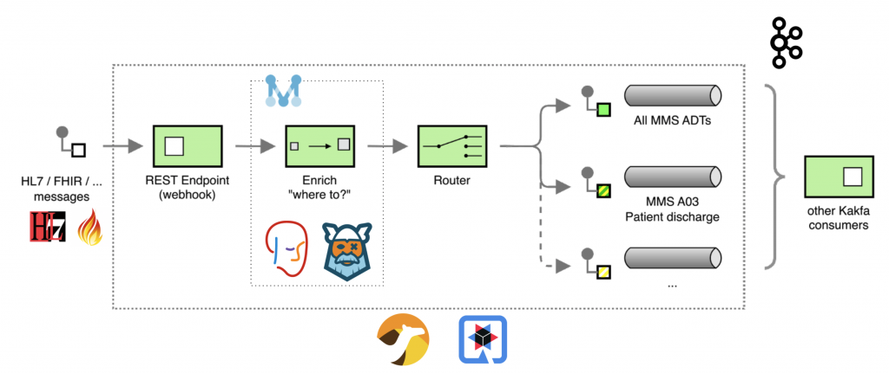
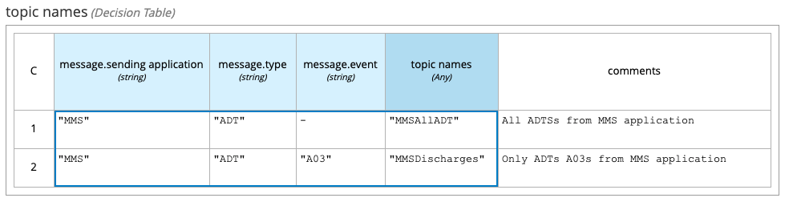
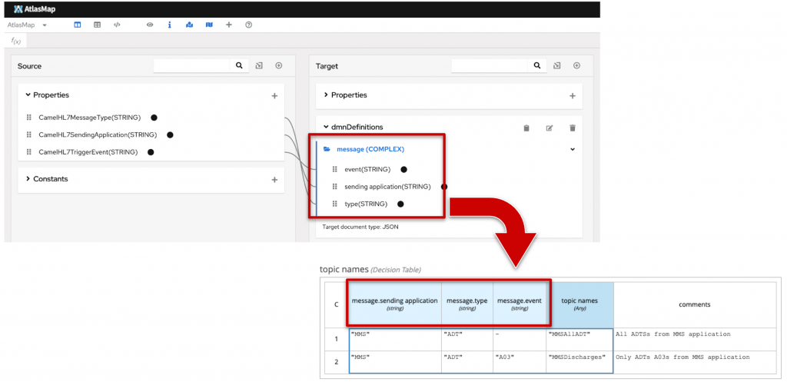
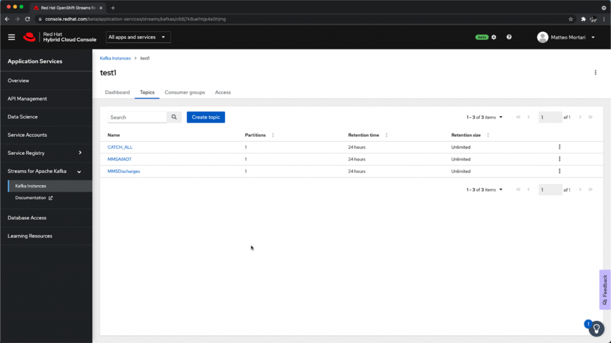
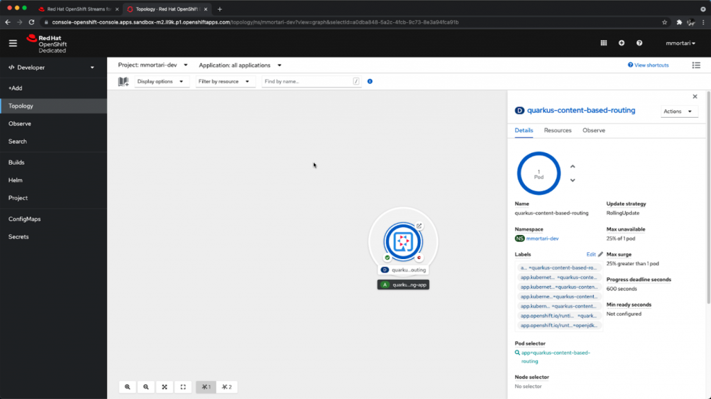
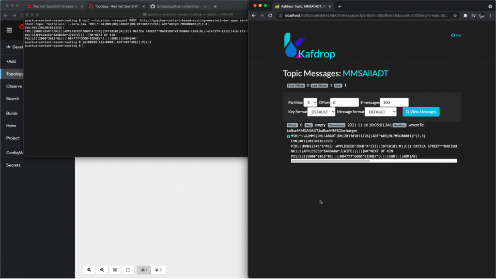

Content Based Routing with Quarkus and Kogito
This is a second iteration of a previous post, where we implemented EIP patterns using just Drools and Apache Camel.
In this post instead, I want to share with you how to implement a complete, end-to-end Content Based Routing solution using Quarkus as a developer platform, including: Drools DMN Engine, Kogito, Apache Camel, AtlasMap and Apache Kafka as our message broker.
I will make use of a Managed Service offering for Kafka, which you can try for free yourself too, by using this link: https://red.ht/trykafka.
I will also make use of the Red Hat Developer OpenShift Sandbox to deploy the application; you can try for free yourself by using this link: https://developers.redhat.com/developer-sandbox.
Content based routing overview
Here is the revised Enterprise Integration Pattern diagram of the flow, with the new components:

The application keep the focus on routing healthcare-related messages; for this demo example, messages are routed accordingly to the following decision table rules:

The table above describes the rules of message routing in terms of the (business) domain model:
- the sending application
- the type of message
- the type of event
For the purpose of this demo, the examples are provided using HL7v2 as the technical format for the message payload. You can read more about HL7v2 on the HL7 website and on this tutorial page.
In order to properly translate from the specific technical format HL7v2 into the domain model, we can make use of the AtlasMap capabilities of data-mapping. This allows the stakeholder involved in the content based routing application to more easily inspect and describe the rules, for instance. Here is a visual summary of the AltasMap intent combined with the DMN decision table:

In a separate post about data enhancement, I hinted at combining the capabilities of AltasMap with DMN; I hope this tutorial now provides a very pragmatic example!
Technical details
In this section, I want to highlight how the Camel DSL allows to implement the EIP pattern very easily:
from("direct:hl7")
.enrich("direct:label", aggregationStrategy)
.to("log:org.drools.demo?level=DEBUG&showAll=true&multiline=true")
.routingSlip(header("whereTo"))
.transform(HL7.ack())
;
from("direct:label")
.unmarshal().hl7()
.to("atlasmap:atlasmap-mapping.adm").unmarshal().json()
.process(kogitoDMNEvaluate) // <== Rules as DMN decisions
.setHeader("topicsHeader", simple("${body[topic names]}"))
;As you can see, that’s all needed in order to implement the Enterprise Integration Pattern in a Quarkus application, and integrate it with AltasMap and Kogito. You can access the source code at this git repository: https://github.com/tarilabs/quarkus-content-based-routing.
Deployment
After setting up the Managed Kafka and OpenShift Sandbox accounts using the links provided above, the deployment is pretty straightforward.
First, we create the intended Kafka topics on the Managed Kafka console.

Second, we deploy the content based routing Quarkus application using the OpenShift console.

Don’t forget you can easily recreate the same setup yourself and for free, by using the links provided earlier in this post. For instance, I used the very same links myself in order to make sure the demo worked fine using free resources only.
Finally, the deployment and setup is complete, and we can start to make use of our content based routing solution, by sending REST calls to the ingress endpoint; this can be used as a classic webhook or analogous to a CDS hook.

Conclusions
To see a demonstration of this setup in action, don’t forget to check out the video linked at the beginning of this post! For example, the video shows the application responding live to the incoming messages in order to route them to the expected Kafka topic.
Finally, I hope this article is helpful to you as a pragmatic example on how to implement a complete content based routing solution using Quarkus, Drools DMN and Apache Camel.
Feedback?
Questions?
Don’t hesitate to let us know!